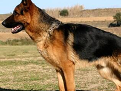

Pastor Alemão
O Pastor Alemão é uma raça originária da Alemanha, muito conhecida pela sua inteligência, lealdade e facilidade de aprendizado. É bastante utilizado em trabalhos policiais, de guarda e como cão-guia, além de ser um ótimo companheiro para famílias que têm espaço e tempo para exercitá-lo.
Mais fotos da raça
